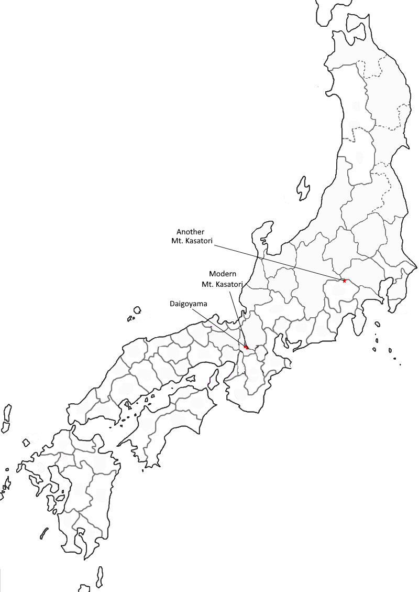

Poem #261 
雨ふれどつゆももらじをかさとりの山はいかでかもみぢそめけむ
ame furedo
tsuyu mo moraji o
kasatori no
yama wa ika de ka
momijisomekemu
tsuyu mo moraji o
kasatori no
yama wa ika de ka
momijisomekemu
How does it happen
that Umbrella-Wielding Hill
flaunts autumnal hues?
Though it is visited by rain
not a dewdrop's worth leaks through.
that Umbrella-Wielding Hill
flaunts autumnal hues?
Though it is visited by rain
not a dewdrop's worth leaks through.
Poem #263
あめふればかさとり山のもみぢばはゆきかふ人のそでさへぞてる
ame fureba
kasatoriyama no
momijiba wa
yukikau hito no
sode sae zo teru
kasatoriyama no
momijiba wa
yukikau hito no
sode sae zo teru
At Kasatoriyama -
Umbrella-Wielding in rain -
the brilliant colors
of autumnal foliage
set travelers' sleeves aglow.
Umbrella-Wielding in rain -
the brilliant colors
of autumnal foliage
set travelers' sleeves aglow.

Background Information
According to McAuley, there are different theories on where Mt. Kasatori was. He says there are two possible locations: modern Mount Kasatori and Mount Daigo. There are multiple modern Mount Kasatori (as seen on the map) but the one he referred to is in modern day Uji.
Kasatori was a location for viewing scarlet leaves in Autumn, as well as a placename associated with rain. Its name is also a pun with “Kasa” meaning umbrella and “tori” meaning take (McAuley).
Kasatori was a location for viewing scarlet leaves in Autumn, as well as a placename associated with rain. Its name is also a pun with “Kasa” meaning umbrella and “tori” meaning take (McAuley).